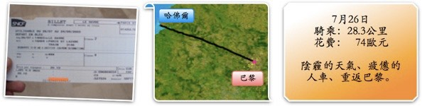
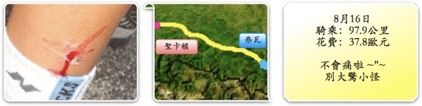
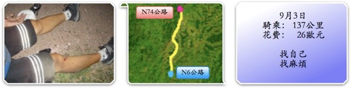

2005年
二姊夫跟二姐兩個人送我到機場，四點半就出發了，比預計早了一些。五點半到桃園中正機場一航廈，將裝…
早上睡到六點多就醒了，晚上還蠻涼爽的，一覺好睡。睡醒只有一個感想，『微笑是世界共通的語言，打呼…
六點多，韓國姊妹花就醒來了，她們兩個今天要搭火車到比利時去。跟英文很好的國際女孩（她還在睡）分道揚鑣。
在大大的雙人床睡覺，超到八點了，還是賴著不想起床，真的好舒服唷 ZzZz起來後發現眼睛還是紅紅…
昨天晚上因為趕著把四天份的遊記給弄好，準備明天上線。雖然只是簡易版。但一口氣弄四天份的，也搞到…
明明十二點多就早早就寢了，但隔天早上居然睡到超過九點才起床。一天睡得比一天還晚，有點糟糕@@"
出國旅行都睡到日上三竿才起床，明明就已經睡了八、九個小時，但還是要賴床才甘心。早上八點半才『下床』（…
早上一醒來，就聽到滴滴答答的聲音，還以為是水龍頭沒鎖緊。結果是外頭在下雨，看來已經連下了一個晚上，…
昨晚睡覺之前，在大大的浴缸中泡了舒服的熱水澡，疲勞全部消散一空。一覺醒來，外頭又在飄毛毛雨，電視…

到法國第一次失眠，翻來覆去就是睡不著，彷彿床邊站著一個人在偷看我。好不容易睡著之後，卻開始聽到…
清晨五點多接到台灣來的電話，哥哥說包裹兩三天才會到，要我先在巴黎買來頂著。
早上八點半起床，半夢…
今天是很有文藝氣息的一天，先將單車環法的事擱在一旁，放自己一天旅遊假。既然都回到巴黎了，那就順道…
早上天氣好好，但有一種莫名的惆悵，大概是要出獄的緣故吧，關了兩天有點捨不得走。捨不得牢裡有創意…
昨天睡得正安穩的時候，被滂沱大雨混雜著閃電的氣勢給驚醒。趕緊跳下床將放在窗台吹風的鞋子給收進來…
我發覺在法國待了兩個星期之後，照鏡子發現自己似乎胖了一些。這也難怪，天天都在吃薯條、漢堡、披薩、…
昨天弄丟錢包之後，晚上就做了奇怪的夢，夢到把iBook、iPod、Z55，全都弄不見了。看到人…
總理先生您好，感謝您在百忙的公務之中閱讀我的來信。我是一位目前正在法國做單車旅行的台灣青年，目前…
一早起床就發現身體的狀況相當不妙。頭昏眼花、手腳發軟、四肢無力、噁心想吐、頸部僵硬....大概…
早上睡醒大約是八點半，夜裡迷迷糊糊之中好像有什麼重要的事情還沒有做，但就算有什麼天大的事情，也…
吃了感冒藥的緣故吧，昏昏沈沈就睡著了。半夢半醒之間，突然好想回巴黎。那邊比較溫暖，但覺得這樣就…
一覺好睡，過了九點才依依不捨的下床活動。看到窗外晴朗的好天氣，心情不禁興奮了起來∼總算是夢寐以求…
昨天好晚才找到過夜的地方，吃完晚餐已經將近深夜十一點。盥洗完畢後，拖著疲憊的身體只想睡上一大覺，…
調查報告NO.SD5311-2號
八月八日父親節公休的真相
早上從玫瑰小房旅館醒來，桌子的抽屜…
調查報告NO.SD5317-1號
八月九日日本長崎原子彈爆發60週年紀念日公休的真相
被關在旅館，…
隔日，得想辦法從巴黎回南特，腳踏車跟行李全都在那邊，不回去怎麼行呢。仗著自己還差兩個多月才滿25…
昨天喝的有點小多，可惜不會講法語，不然能在小酒吧能別人聊上兩句吐吐苦水感覺應該不錯。幸好早上起床…
今天算早起的，八點就乖乖下床開始收拾行李，大概是昨天被晒昏了，想趁著早上涼爽多趕一些路，再說昨天…
持續不斷的豔陽天，雖然不是說很熱，了不起也才27~8度，但還是曬黑了。今天睡得有點晚，加上路邊…
我真是個天大的豬頭，晚上出去上網要戴帽子時，怎麼找都找不到。老天爺呀∼又被我遺忘在哪個旅館了呢？ /…
今天是到法國的第三十天，也是失去方向的一天。不知該往何處騎。
『天亮才知道今天要往騎、天黑才知道…

醒來發現仍是相當晴朗的天氣∼一片雲都沒有的藍天，和晒的日漸黝黑的皮膚。
環島的時候，三條比較有名…
凌晨三點半，在極惡劣的宿醉中醒來，因為實在口渴的很難受。昨晚真的喝太多了，混雜著喝了一堆有的沒…
今天是超棒的一天，從早上起床的那一刻起，就很完美。糾纏了一整天的宿醉總算消散一空，整個人彷彿重生…
不知道在亢奮什麼，一整晚心悸的睡不好覺。翻來覆去一直游離在睡著和清醒之間，不好好睡上一覺怎麼會…
這年頭還相信有小叮噹的人，真是好人。無奈小叮噹在抽屜裡，抽屜被鎖上了，鑰匙不在我這.....
…
天氣蠻糟糕的，地中海氣候沒有理想中的穩定，每天睡醒都會擔心是否又變了天。天意難為，它要變，我能耐…
發條鳥年代記，第一次看第一集是在念二技的時候，在圖書館隨手翻了翻便睡午覺。認真的看完它，則是在…
『叩叩叩∼你醒了嗎？』，於是八點半起床。窗外那陰沈的雨雲飄散著濃郁的溼氣，隨時都會下起雨的象徵。
明天去看看海吧，睡前這麼期待著，看看海應該會舒坦些。
早上起來天氣又回到萬里無雲的狀態，跟前幾天…
晚上十一點剛過，在街頭上網完畢散步回旅館，看到一樓大廳擺了四∼五個水桶。水不知道是打哪邊挑來的，…
早上起床，鼻塞的很嚴重，到達沒辦法用鼻子呼吸的程度，努力的擤了鼻涕，也沒什麼幫助。
依照旅館給的…
在溫軟的被窩中賴床，是天經地義的事情，應該立法予以保障。那在硬邦邦的水泥地上也能賴床是怎麼回事？
早上醒來發現外頭真的有市集，但身上剩下不到五歐元，買不起什麼東西，市集也沒有刷卡的餘地。趁肚子…
從到法國的第一天開始，每天睡前都會吃一顆綜合維他命，結果還是照樣感冒。已經吃了2/3瓶了，雖然…
為了不讓自己變成豬，早上很守信用的在七點..........................五十九分…
山裡的夜晚真的冷的叫人直打哆嗦，半夜不知為什麼突然醒來，原來是把棉被踢到床下而冷醒了。白天熱的…
在酒吧待到快十二點才離開，相當好，沒有喝什麼奇奇怪怪的酒。
夜晚的法國比白天涼爽太多了，這才是適合…
今天蠻亂七八糟的，其實這幾天都差不多，騎的方向總之就是往北騎，目的地不限定。過夜的地點隨便都好，…

會擔心親戚朋友可以跳過這篇遊記沒關係，看了只會多擔心。
環法FAQ：
Q.為什麼選擇騎腳踏車呢？
半夜雖然冷到叫人四肢僵冷，但好處就是傷口居然一點痛的感覺也沒有。不想辦法睡覺的話，明天一定沒有…
由於昨晚睡的太熟，完全忘了受傷這回事，睡覺的姿勢千奇百怪，睡醒之後身上自然沾滿了各式血痕。聽起來…
人～要有夢想．心才不會老 要勇於實現夢想．你才會知道 其實自己好棒！